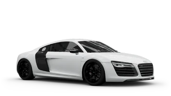
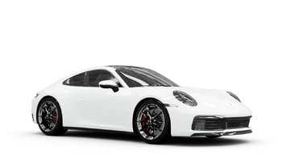
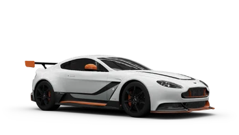

BMW M3'08
BMW M3 generasi pertama, diperkenalkan dua puluh tahun lalu, ditenagai oleh mesin 2.3L inline 4 silinder yang menghasilkan tenaga 195 hp. Lengkungan roda melebar dan spoiler besar (radikal pada saat itu untuk kendaraan jalanan) membedakan M3 dari versi standar BMW Seri 3. BMW secara khusus merancang M3 untuk menghomologasi mobil tersebut untuk balap Mobil Touring Grup A sehingga coupe ini ringan, gesit, dan dibuat untuk balapan. Populer di kalangan masyarakat (hampir 18.000 unit terjual), mobil ini juga merupakan pemenang—banyak yang menganggapnya sebagai mobil balap paling sukses di dunia. Dua dekade kemudian, dengan mesin V8 pertamanya, BMW M3 generasi keempat tahun 2008 mengambil alih kekuasaan. .
Go there

Audi R8
Audi R8 adalah mobil sport mesin tengah, 2-kursi, yang menggunakan sistem penggerak all-wheel drive permanen quattro merek dagang Audi. Itu diperkenalkan oleh produsen mobil Jerman Audi AG pada tahun 2006.Mobil ini dirancang, dikembangkan, dan diproduksi secara eksklusif oleh anak perusahaan swasta Audi AG yang memproduksi suku cadang otomotif berkinerja tinggi, Audi Sport GmbH (sebelumnya quattro GmbH), dan didasarkan pada Lamborghini Gallardo dan saat ini platform Huracán. .
Go there

Porsche 911'19
Porsche 911 RSR-19 adalah mobil balap yang dikembangkan oleh Porsche untuk bersaing dalam kategori LM GTE dari Kejuaraan Ketahanan Dunia FIA yang disetujui Automobile Club de l'Ouest, Seri Le Mans Eropa dan kelas GTLM, dari IMSA Asosiasi Olahraga Motor Internasional. Kejuaraan Mobil Sport WeatherTech. Ini berfungsi sebagai pengganti langsung Porsche 911 RSR (2017). Mobil ini melakukan debut balapnya di 4 Hours of Silverstone 2019. Mobil ini diperkenalkan di Goodwood Festival of Speed 2019, di timing gantry sirkuit Hillclimb, beberapa saat sebelum balapan pertama untuk publik, dengan Gianmaria Bruni sebagai pengemudinya.
Go there

Aston-Martin Vantage
Aston dengan Mercedes-AMG membuat Vantage mendapatkan keuntungan dari teknologi Mercedes dan drivetrains yang sulit dikembangkan oleh perusahaan kecil seperti Aston Martin.Daya dialihkan ke transaxle otomatis 8 kecepatan ZF untuk menurunkan daya dan mendistribusikan bobot dengan lebih efisien.
Go there